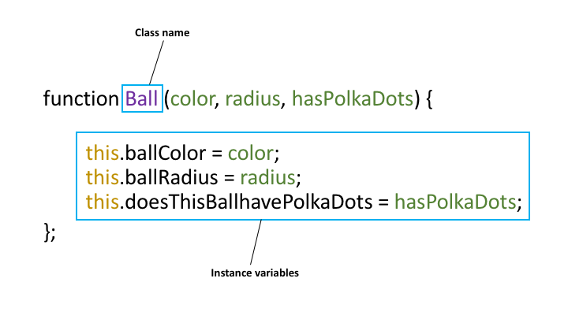
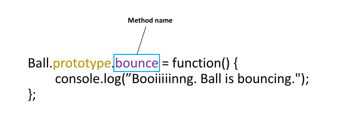
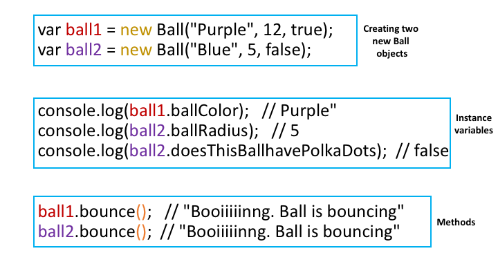

Introduction to Object Oriented Programming
Many of you are already familiar with the ideas of Object-Oriented Programming, but let's review so that it's fresh in our minds
General Idea
In JavaScript, an object is a kind of value that can have two important characteristics:
State: This is information describing the object. For example, a ball object could be the color red, have a radius of 12 inches, and have polka dots.
Behavior: This is the information describing the actions of the object. For instance, a ball object can bounce.
In order to create specific objects, we need to create a JavaScript class. (Note that is different from the HTML classes!) Imagine a class as a general grouping, and objects are the specific instances of that grouping. Here are some examples of classes and objects.
- Class: Ball
- Objects:
- Red, has a radius of 12, has polka dots, bounces
- Blue, has a radius of 5, does not have polka dots, bounces
- Class: Wellesley College Student
- Objects:
- Beatrice, Class of 2019, MAS major, says "hello!"
- Jackie, Class of 2018, biology major, runs to lab
- Kate, Class of 2020, English major, sings
Programming Classes and Objects
Let's make our ball object through JavaScript:
function Ball(color, radius, hasPolkaDots) {
this.ballColor = color;
this.ballRadius = radius;
this.doesThisBallhavePolkaDots = hasPolkaDots;
};
Ball.prototype.bounce = function() {
console.log("currently bouncing");
};
var ball1 = new Ball("Purple", 12, true);
var ball2 = new Ball("Blue", 5, false);
console.log(ball1.ballColor); //Purple"
console.log(ball2.ballRadius); //5
console.log(ball2.doesThisBallhavePolkaDots); //false
ball1.bounce(); // "Booiiiiinng. Ball is bouncing"
ball2.bounce(); // "Booiiiiinng. Ball is bouncing"Let's break the code into sections. The first 5 lines of this code is:

The class name is Ball, as indicated by the box and
purple in the picture. Class names are always capitalized by
convention. When creating a Ball, it needs to be given a color, a radius,
and whether or not it has polka dots, as shown by the green. The code with
the keyword this indicates that you are binding the green
parameters (color, radius, hasPolkaDots) to the name of the instance
variable (ballColor, ballRadius, doesThisBallHavePolkaDots). The
instance variables describes the properties or state of the object,
as described earlier in this reading.

Just as instance variables describe state, methods describe the behavior of
the object. Here, the name of the method is bounce as indicated by the box and the purple.
When a ball bounces, it logs "Booiiiiinng. Ball is bouncing." When you create new methods,
you always preface the function with the name of the class (in this case, Ball) and the key
word prototype.

After you create the Ball class, you can create specific instances of Ball objects.
The first two lines of code create ball1 and ball2, each with its own characteristics. Notice that
when you create brand new objects, you must use the keyword new.
The next three lines of code accesses the different instance variables. For example,
ball1 is purple. Finally, the last two lines of code access the method of the Ball class.
Both ball1 and ball2 have the method bounce, so they will behave the same way.
Notice that when you access methods, you must use parenthesis at the end! (as shown by
the orange).
Exercises
1. Here is the Ball code in JSfiddle to explore. Open up JSfiddle and the console, and try creating new objects, accessing instance variables, and calling methods. Afterwards, try creating new instance variables and methods to your liking.
2. Create your own Person class. Add instance variables and methods of your choices.